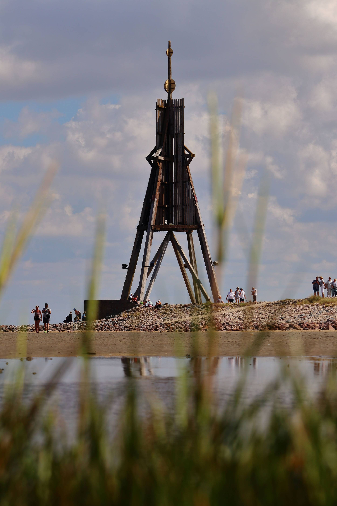
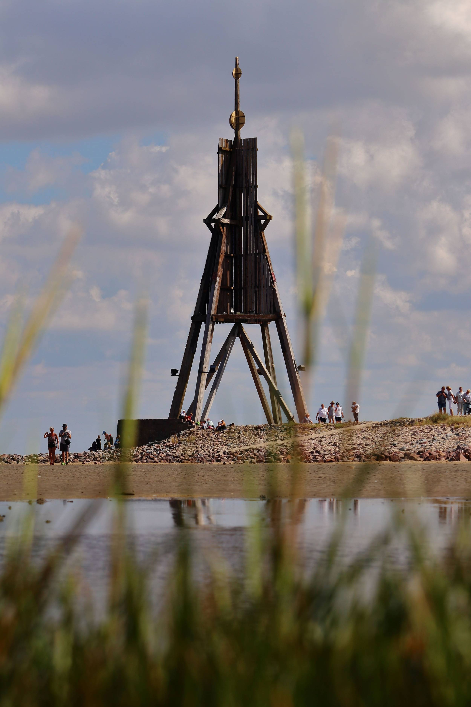

Szia! Én Márton vagyok
egy szenvedélyes fotós, aki szeret pillanatokat megörökíteni. Az objektív mögött megtalálod azt a lelkes embert, aki mindent megtesz azért, hogy minden pillanat varázslatos és emlékezetes legyen. Az alkotás számomra nem csak munka, hanem egy élmény, ahol a kreativitás és a technikai hozzáértés találkozik...
Aktualitások
Bal oldalsó cím
Ez a bal oldali szöveg, de mivel nincs kedvem tovább írni, nem is fogom, mert ez csak egy próba.

Középső cím
Ez a középső szöveg, de mivel nincs kedvem tovább írni, nem is fogom, mert ez csak egy próba.

Jobb oldalsó cím
Ez a jobb oldali szöveg, de mivel nincs kedvem tovább írni, nem is fogom, mert ez csak egy próba.
Galéria


 
